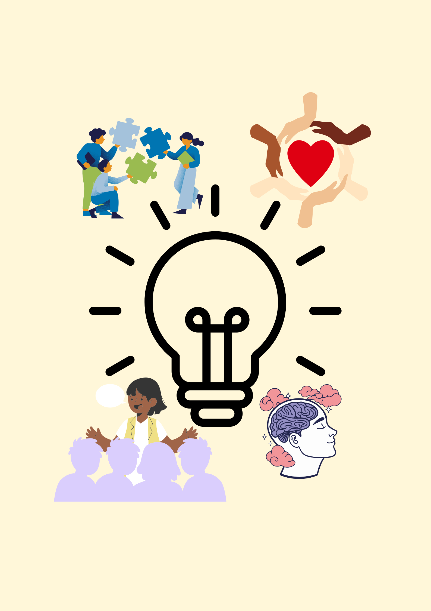

dhjsndfksjnfjksdnfkdsnfdsknf
My Teaching Philosphy
My teaching philosophy is based on developing and maintaining a supportive and safe learning environment where every student feels valued, respected and motivated to achieve success. It is vital to support students learning and guiding positive behaviour that students are motivated to continue both inside and outside the classroom. My approach aims to encourage student choice, empowering students to take responsibility for their actions. Overall, the poster below symbolises what type of teacher I aim to be, in fostering student's learning and encouraging them to do their best.